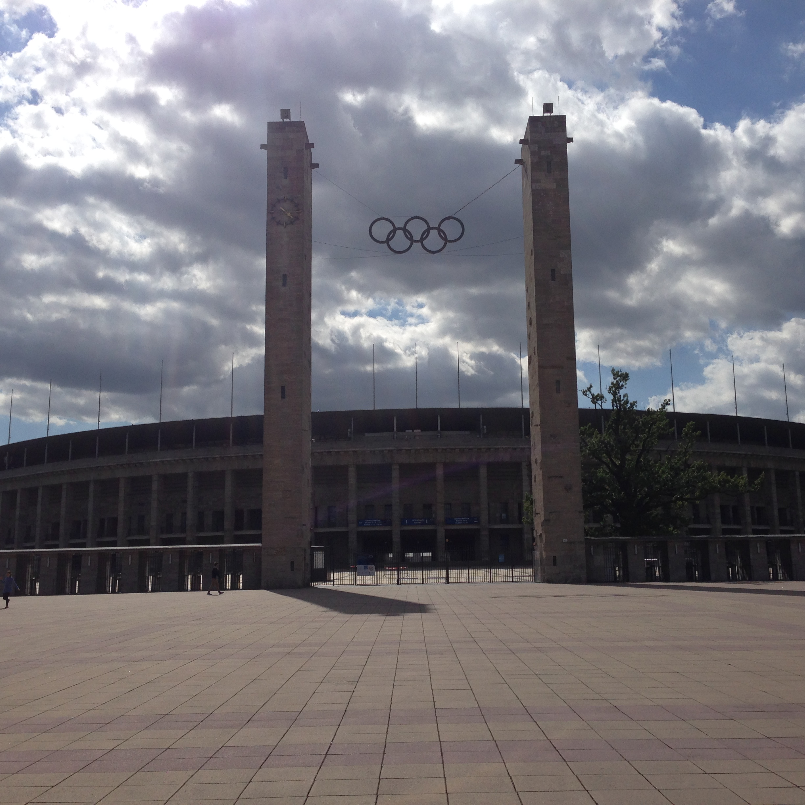
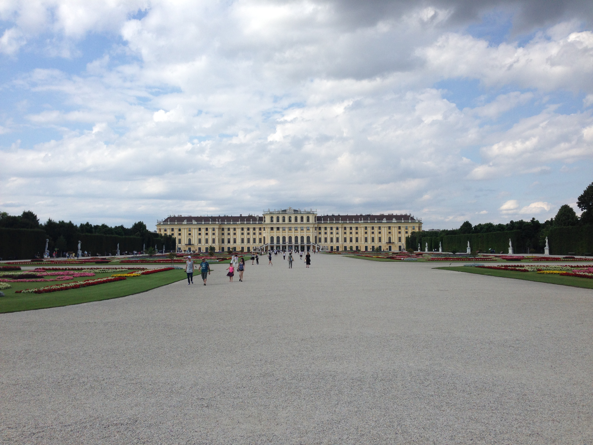
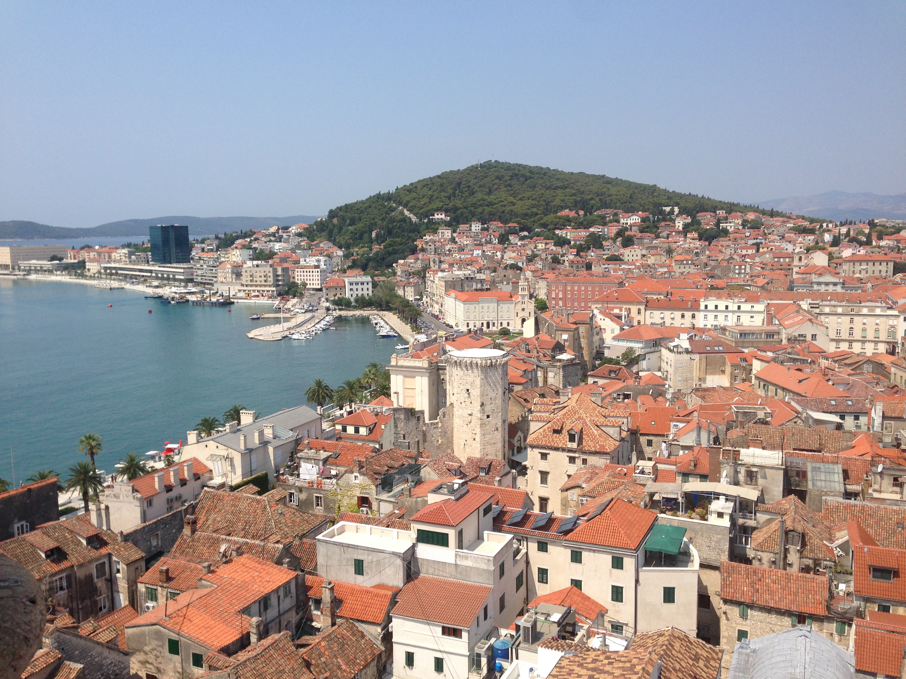
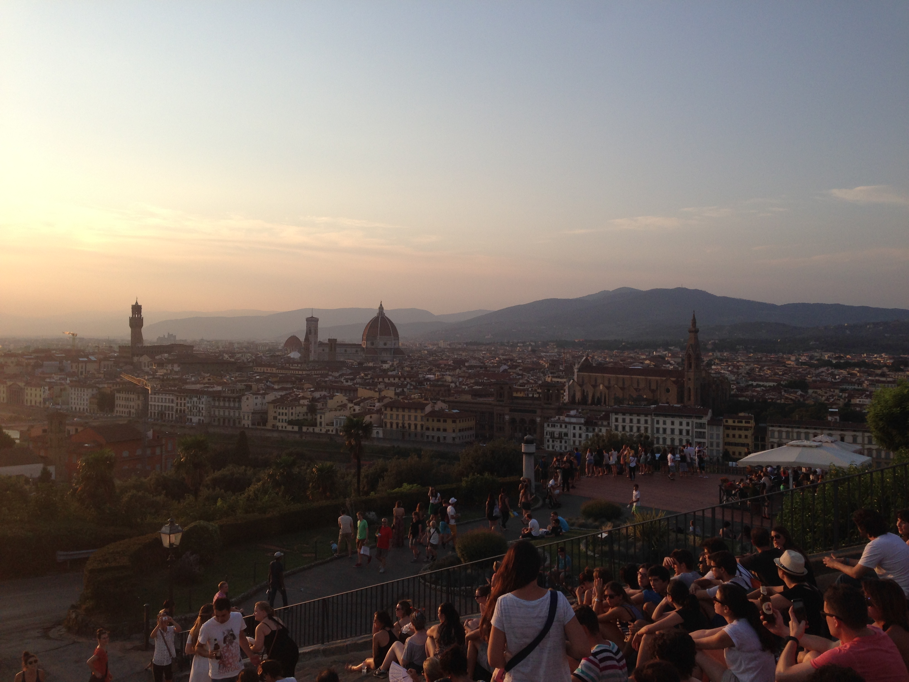

Ireland
After graduating college my friend Caleb and I took backpacking trip around Europe. This was my first time getting to experience Europe and we set out for a month a half trip with nothing but 1 backpack each. Our trip began in Ireland where spent time in Galway, Kinsale, and Dublin. Of course, while in Dublin we had to go to the Guiness headquarters and have a pint in the sky bar...delicious!

Belgium
After Ireland we hopped across to Belgium where we spent time in Bruges and Ghent. Bruges was absolutely beautfiul and had some of the most interesting beer selection of any city on the trip. We spent a lot of time biking around the towns and taking in the old architecture. Unfortunately I got food poinsing in Ghent so I missed a few days, but still loved my time in Belgium.

Netherlands
In the Netherlands we spent time in both Amsterdam and The Hauge. Everyone bikes everywhere in the Netherlands which we really enjoyed although you have to really pay attention to not be the annoying tourist who's messing with the traffic flow. At certain intersections there is even a spearate intersection built above the road exclusively for bikes. While in the Netherlands we randomly caught some of the World Beach Volleyball Championships and saw the Van Gough and M.C. Escher musuem.

Germany
In Germany we spent time in Hannover and Berlin. It surprised me that of all the cities we visited, Hannover was the city where we encountered the least English. Most people we met did not speak English which made for a feeling of truly being somewhere different and just having to take our chances and explore. Berlin was hands down my favorite city of the trip. We were there 4 days and easily could have stayed several more. The history is fascinating, the people were incredibly friendly, there was amazing public transportion, and the Germany beer absolutely hit the sport after long days of exploring the city.
Czech Republic
Next up...Prague! Prague was an absolutely stunning city and was mostly spared from the damage of WWII so many of the oldest buildings are still in tact. Prague was extremely cheap (beer was literally cheaper than water...noticing a theme to this trip?) and had amazing food and drink. We watched a jazz festival and saw the world's longest running astronomical clock...it has been running since 1410!

Austria
Austria was actually my least favorite place on the trip. We only saw Vienna which did have amazing architecture and tons of old buildings, but it was very expensive and we struggled to find things we were interested in doing and the people there were not particularly friendly and seemed annoyed by having Americans in the city. We visited the massive Schölnbrunn Palac (pictured below) where a 6 year old Mozart gave his first performance to the royal family in 1762.
Hungary
Our next stop was in Budapest, Hungary. Budapest is a charming city that is famous for its bathhouses and ruin bars. While there we tried a few different bathhouses and also did some cave tours. The Danube river runs through the city splitting the old and new city. Budapest was full of history to explore, unique foods, and intersting bars

Croatia
After a long overnight train we arrived in Split, Croatia. Game of Thrones fans may recognize it as this is where King's Landing was filmed. Croatia was essnetiallya stopover country for us on the way to Italy and we both wished we'd planned more time there. Split was absolutely stunning. There was ancient Roman ruins, amazing seafood, and lots of outdoor activity. We spent time kayaking, cliff jumping, and snorkeling. This is absolutely a country I would want to revisit and spend more time in.
Italy
Our final stop was in Florence, Italy. My great grandparents are from Italy and I was thrilled to make it there. We had an amazing experience. We took a vespa vinyard tour through the outskits of Florence which was truly breathtaking and delicious. While in Florence we tried lots of different pasta, seafood, and wine and visited the too many to count historical buildings and statues. Everything in Florence truly felt like a wonder and the Italians we met were very kind and hospitable. This was another city I could easily go back to and spend several more days in...it was the perfect way to cap off the most amazing summer of my life.
